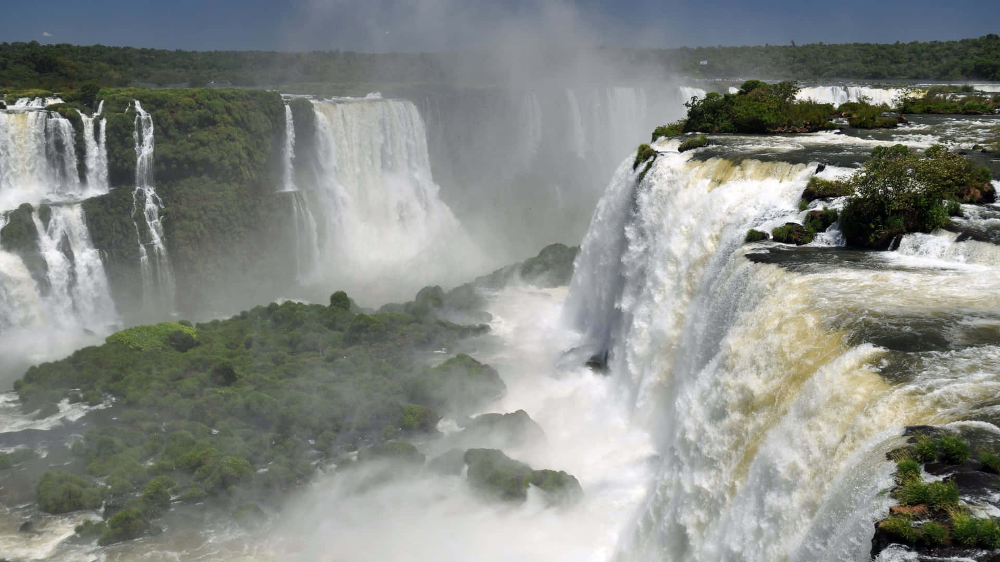
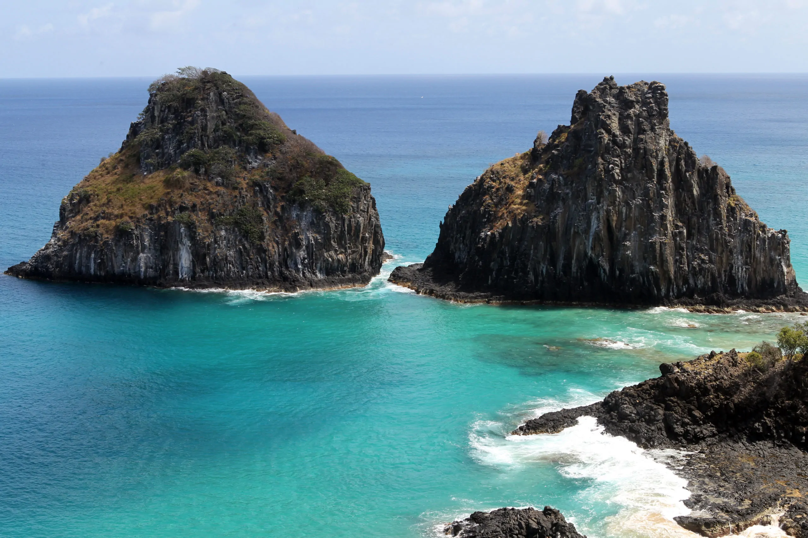
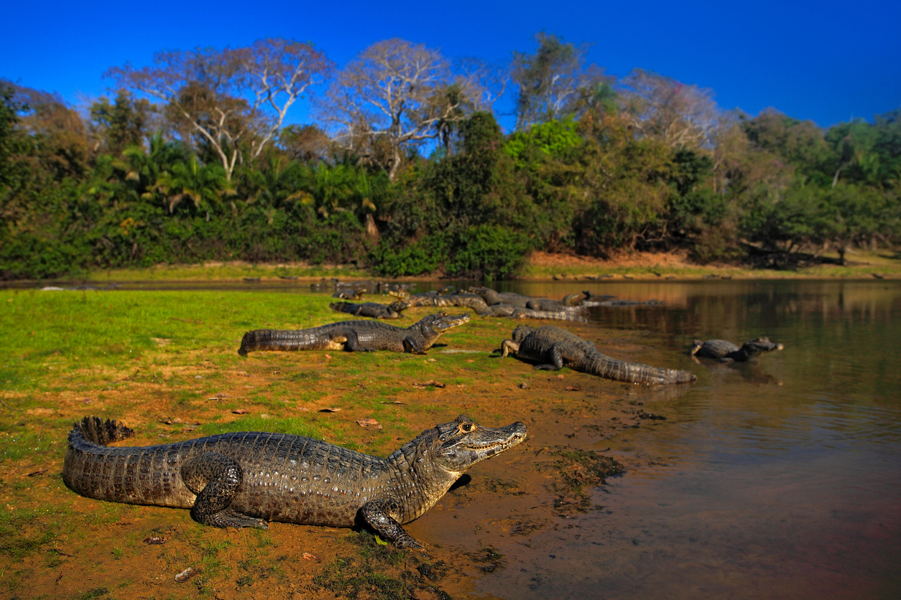
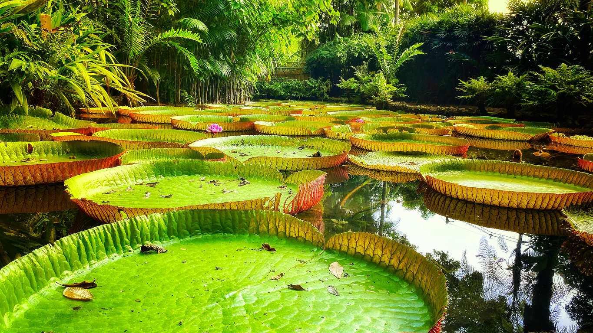
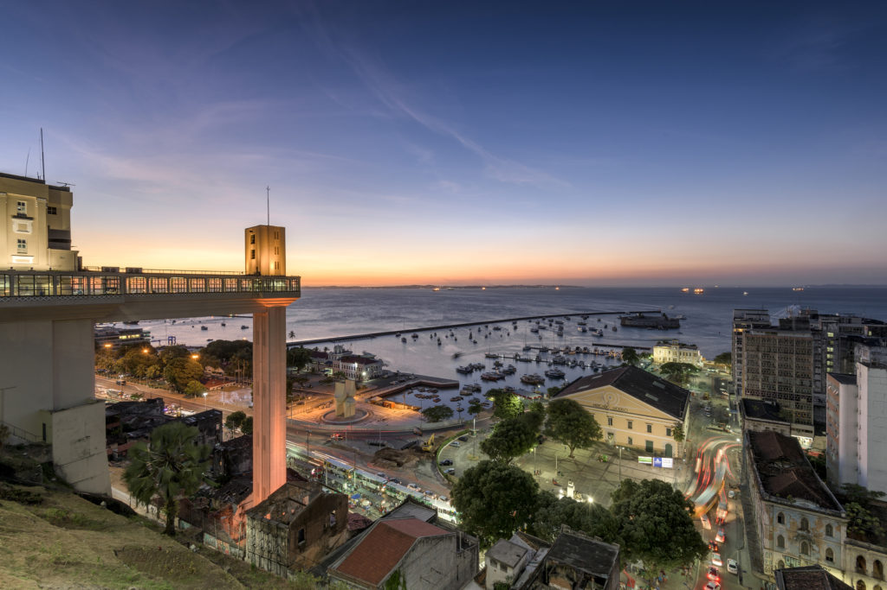

Destinos
Destinos
O Brasil oferece uma diversidade de destinos turísticos que vai desde praias paradisíacas e florestas tropicais até desertos de dunas e cidades históricas. Um país que cabe o mundo inteiro dentro de suas fronteiras.

Um dos maiores conjuntos de quedas d'água do planeta, com 275 quedas ao longo de quase 3 km. Patrimônio Natural da UNESCO.

Um vasto deserto de dunas brancas pontilhado por lagoas de água doce cristalina — um fenômeno único no mundo.

Arquipélago vulcânico Patrimônio Natural da UNESCO com praias frequentemente eleitas as mais bonitas do mundo.

A maior planície alagável do mundo, santuário ecológico com onças, araras e capivaras em abundância.

A maior floresta tropical do planeta abriga mais de 10% de todas as espécies vivas da Terra. Uma experiência transformadora.

Primeira capital do Brasil, Salvador é um caldeirão cultural com o maior carnaval de rua do mundo e arquitetura colonial deslumbrante.